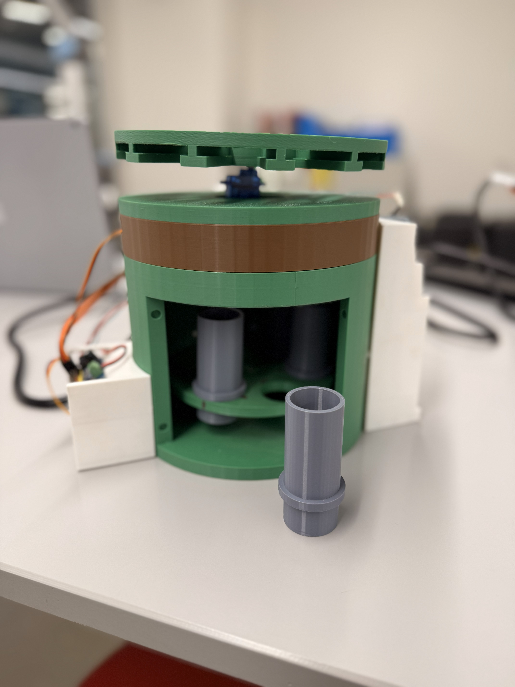
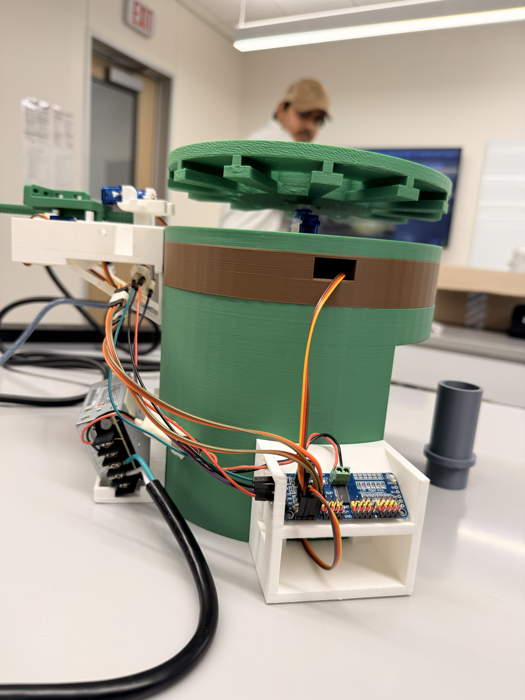

Capstone-style project integrating mechanical design, electronics, and computer vision for automated pill identification and sorting.
This project focused on designing a mechanical pill sorting system capable of identifying and sorting pills using computer vision. CAD-designed trays, servo-driven mechanisms, and Python-based image processing were integrated into a functional prototype.
The mechanical system was designed in SolidWorks with emphasis on manufacturability, modularity, and repeatability. Servo-driven actuators controlled pill gates and rotation mechanisms.
Full system demonstration showing automated pill identification and sorting.